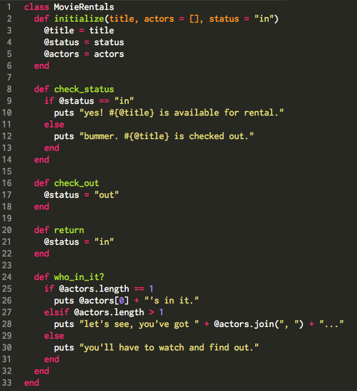
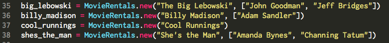
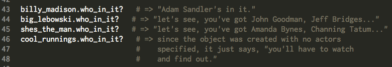

You stay Classy, San Diago
As an Object-Oriented Programming language, Ruby pretty much treats everything as an object. While it may seem confusing at first, it actually makes things easier in a lot of ways. Objects serve as the programmer's agents or proxies, and the programmer can tell them to do specific things and interact with each other in certain ways. Ultimately, the idea is to more easily manage data.
Movie Rental Store
So let's take it back to the 20th century... And let's say that you have a movie rental store. And you want an easy way to manage your movies. As you might imagine, your movies–while all different–all share properties that you might want to keep track of and manipulate. For example, they each have a title, they each probably have actors which may or may not be noteworthy, they can each get checked out and returned, etc.
Since you're going to have a lot of movie objects that you'll want to manage in a similar way, it makes sense to create a class for these objects. A class serves as a blueprint for the objects of that class. The class is used to construct (or 'instantiate') its objects.
Each object is an instance of the class it's in. It has properties that it knows about itself and that can be referred to in other sections of the class. These properties, which are identified by the @ symbol, are known as "instance variables." So in our movie rental example, each movie object knows its title, its main actors, and its status (i.e., whether it's rented or not). Instance variables can be referenced anywhere in the class. For example, they can be referenced in methods that lie outside of the method where they're defined. By the way, by setting the 'actors' and 'status' arguments in the intialize method equal to "[]" and "in" respectively, we're making those the default values upon instantiation unless otherwise specified.
Inside a class, we can also specify what we can do with these objects by defining methods. So if a movie gets checked out, we can call the check_out method on it, which changes that movie object's @status to "out." Similarly, if a movie gets returned, its @status gets set to "in." If we want to check to see if our movie object is checked out, we can call the check_status method on that object. Finally, if we want to know who's in the movie, we can call the who_in_it method on the movie object, and it'll tell us.
In Practice...
So we're just opening our movie rental store, and we decide to start by adding four cinematic masterpieces to our collection. Let's add those movies with the 'new' method...
Now, of course, someone instantly snatches up "She's the Man." So we have to call the rented method on it. Then, when we check_status, we'll see that it is in fact checked out.
If we want to see who are the main actors in our movies, we can just call who_in_it? on each movie.
Now after a few hours, our customer returns "She's the Man." So we have to make sure to call the return method on it. Subsequently calling check_status on that movie confirms that it's available for rental.
So that should give some idea of how ruby classes work. And that's all I have to say about tha'at.